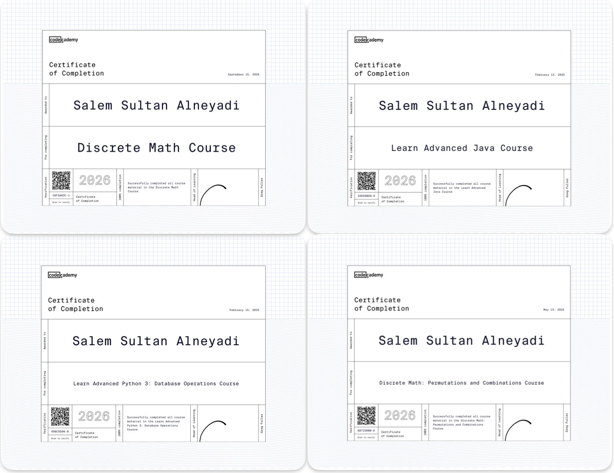

Codecademy
50+ Courses
To complement my formal education, I have proactively completed over 50 intensive courses through Codecademy. This self-directed learning journey has allowed me to achieve technical fluency in multiple programming languages and development frameworks. By consistently engaging with these modules, I have built a robust digital toolkit, enabling me to rapidly prototype ideas, automate complex tasks, and stay at the forefront of the ever-evolving software development landscape.
